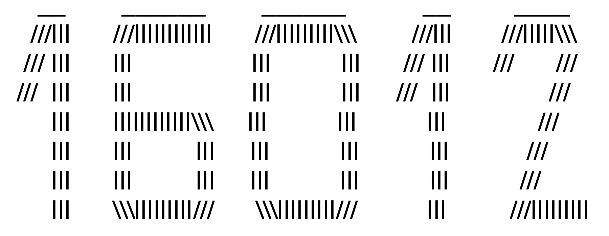

16012.github.io to dość niezwykłe miejsce w tym internetowym uniwersum.
Jest to mój mały skrawek internetowej przestrzni, jeden z ogromnej ilości innych w olbrzymiej sieci internetowej.
Można tu napotkać wiele różnych rzeczy: (moje) przemyślenia, wiersze, obrazki, zdjęcia oraz fajne cytaty (te ostatnie już nie moje).
Jest to moje miejsce i staram się w nim wyrazić siebie. Dołożę jednak wszelkich starań by uczynić je miłym i takim, do którego będziesz wpadać z uśmiechem :)))
Mam nadzieję, że spodoba Ci się tutaj i że znajdziesz coś dla siebie,
Igor
